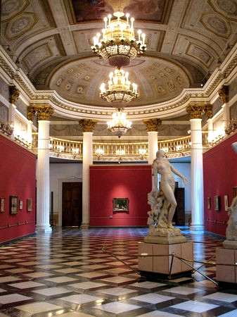

Storia del Museo
Il Museo Universitario Italiano (MUI) appoggia le sue radici in una delle più importanti istituzioni museali padovane. Lo stesso Edificio-A e le collezioni novecentesche di proprietà regionali venete costituivano infatti parte del Museo Civico, a sua volta derivato dalla raccolta privata del patrizio veneziano Teodoro Correr. Difatti la storia del MUI è indissolubilmente legata alla Galleria d'Arte Moderna di Venezia, sulle cui basi gravita la ricerca ed il dibattito culturale tuttora in evoluzione.
L'Edificio-A viene inaugurato nel 1878 in un clima di fervida vivacità intellettuale che pervade la città di Padova di quegli anni, dopo un susseguirsi di circa un decennio di eventi, esposizioni e concorsi realizzati in auspicio della sua costruzione riuniti sotto il titolo di “Museo Padovano Universitario”. Fu però a seguito del 1894, quando vengono aperti al pubblico, in Prato della Valle, gli spazi del museo disegnati appositamente dall'artista e architetto Leone Pancaldi, che si sente la necessità di eccezionali ampliamenti e l'allestimento di nuove sale, sicché, l'anno successivo (1915), un intero stabile, l'Edificio-B, viene concesso dalla Provincia di Venezia grazie anche ai finanziamenti del Comune di Padova.
Nasce così il “Museo Universitario Italiano”, che presto si accresce sia attraverso doni e lasciti di nobili e ricchi veneziani che con acquisti finanziati dallo Stato per il progetto universitario “Musei in Italia”. È in questa fase che inizia l’incremento delle raccolte naturalistiche, prima piuttosto limitate. Oltre a piccoli doni estemporanei si aggiungono le importanti e voluminose collezioni di N. Contarini (1921), G. Miani (1922), A.P. Ninni (un primo lotto nel 1926, altro materiale in periodi successivi), G. Zanardini (verso il 1930) e G.B. Spinelli (1933). Presto sono necessari ulteriori spazi, perciò lo Stato acquista e restaura la nuova ala dell'Edificio-A dove sono trasferite quasi tutte le opere in ristrutturazione.
Nel 1968 la fama e l’importanza del MUI sono tali, e le collezioni così cospicui, che ne viene deciso il trasferimento di una sostanziale parte di materiale in Piazza San Marco, presso il Palazzo Reale e parte delle Procuratie Nuove. Si ha così la definitiva separazione delle raccolte storico-artistiche da quelle naturalistiche ed etnografiche tra i due Edifici A e B. Il MUI valorizza gli esiti di questa straordinaria memoria e sviluppa la riflessione sul proprio significato e sul ruolo del museo, la cui attualità non può prescindere dalle premesse teoriche poste in seno all'Ottocento alla Galleria d'Arte Moderna di Venezia.